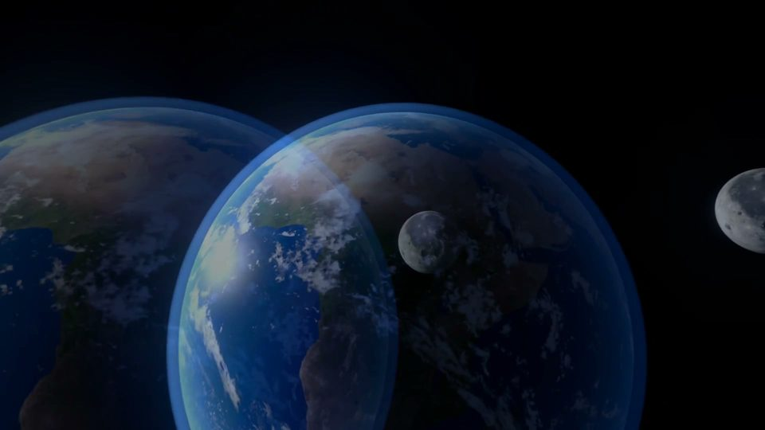
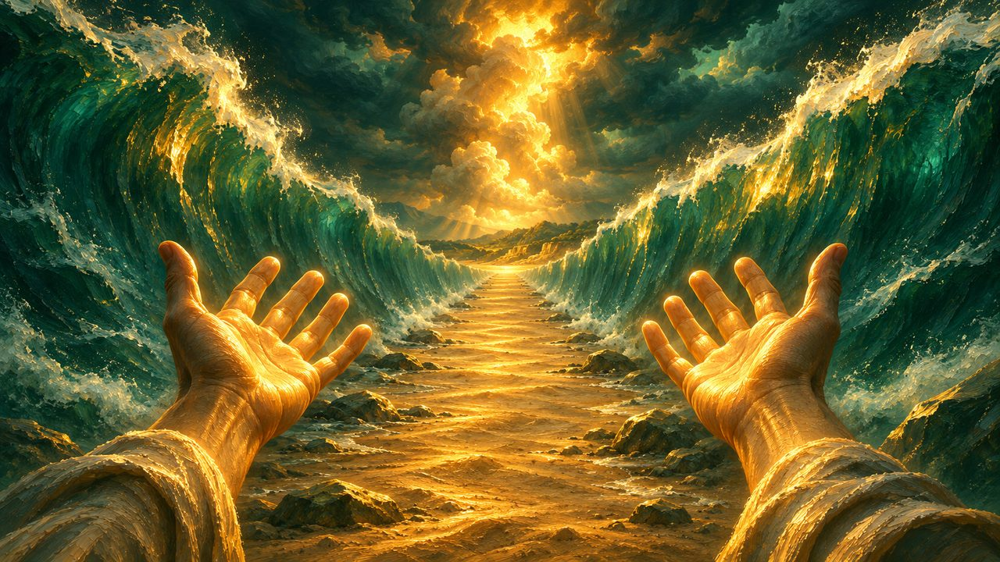
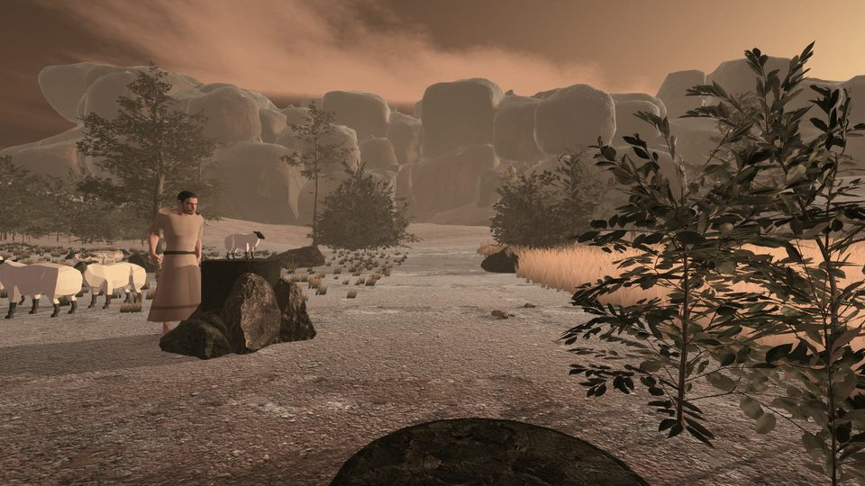
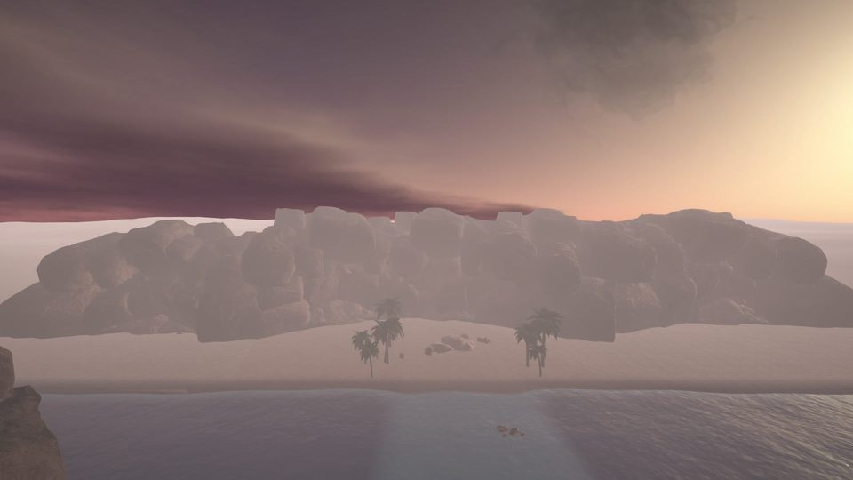
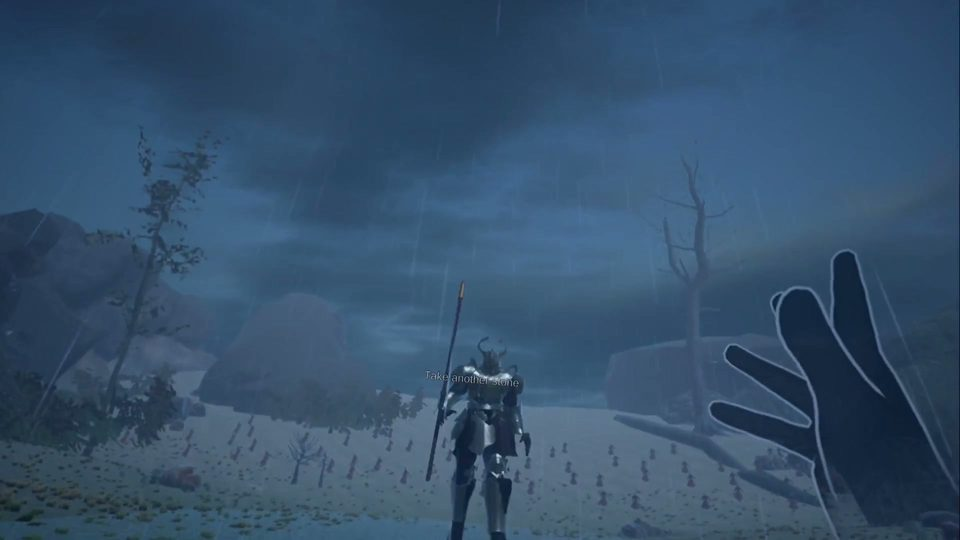
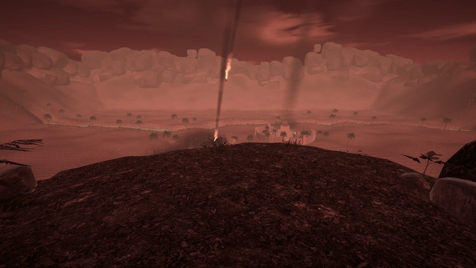
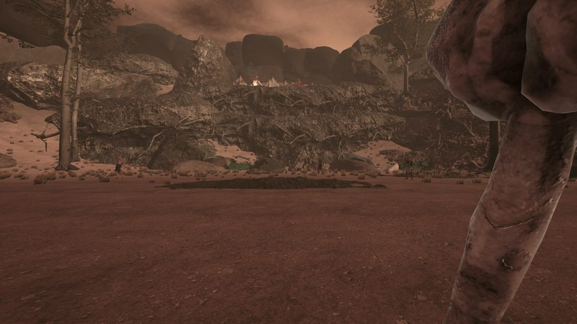
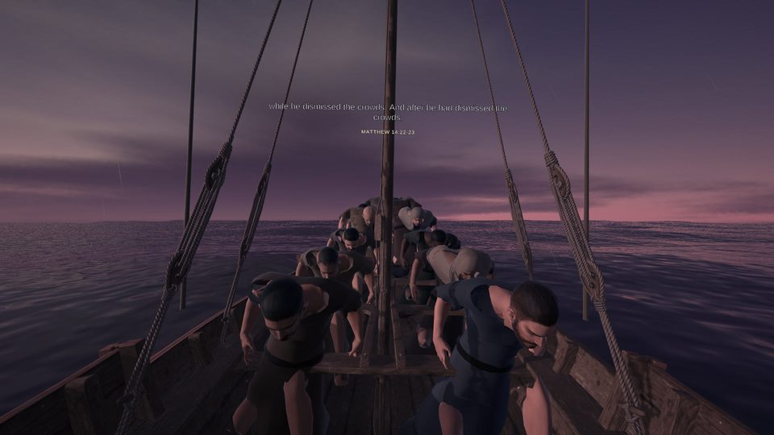
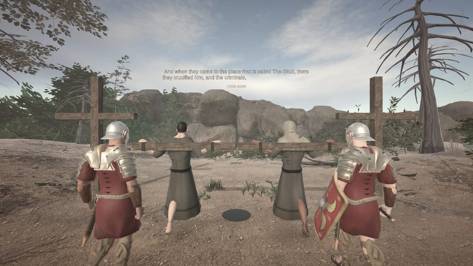
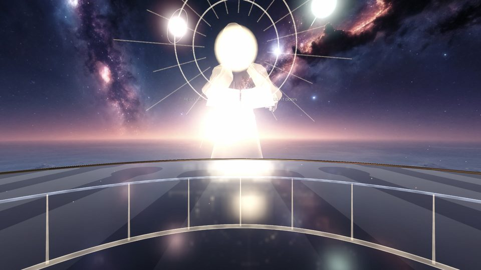

In the Beginning
Genesis 1–2
Clap, and light leaves your hands to make the world, from the firmament to the stars, the beasts and the first man.
Part the Red Sea. Face Goliath. Walk on water. Nine stories of the Bible, lived in seated VR with nothing but your own two hands.
Real footage of the game, played with hand tracking alone. No controllers.
Most Bible experiences ask you to watch. Echoes of Eden asks you to act, and every gesture means what it would mean to someone standing in the story.
No controllers, no buttons, no menus to learn. Clap, grab, point, throw, whirl and lift, and the world answers.
Every chapter is played seated. When the story needs you to face somewhere new, the world turns gently around you.
Every line is the English Standard Version, spoken and captioned word for word.
Glowing marks show where to reach, a see-through hand shows the move if you're stuck, and a hint waits on your wrist.

Ride with Pharaoh's chariots down to the shore. Rise into the sky as the LORD and steer the whirlwind against the host with one outstretched hand. Then come down as Moses, lift the staff, and walk between the walls of the sea while they stand on either side of you.
Choose a chapter by looking at its shrine and holding a hand in its light.

Genesis 1–2
Clap, and light leaves your hands to make the world, from the firmament to the stars, the beasts and the first man.

Genesis 4
Stand at Cain's altar and watch fire fall on your brother's offering, and not on yours.

Exodus 13–15
Take the reins of a galloping chariot, steer the whirlwind from the sky, then part the sea as Moses.

1 Samuel 17
Whirl a real sling over your head, let go, and a three-metre champion falls.

Genesis 18–19
Close your hand and burning stone comes down out of the sky into it. Throw it at the cities of the plain.

Judges 15
As Samson, punch, grab and throw until a thousand Philistines lie in heaps.

Matthew 14
Step out of the boat as Peter, sink when you look at the wind, then reach down as Jesus and lift him out.

The Gospels
Nothing moves unless you lift the beam. You fall, and you must lift it again.

A quiet hall
Pull a star from the sky and hear the verse inside it.